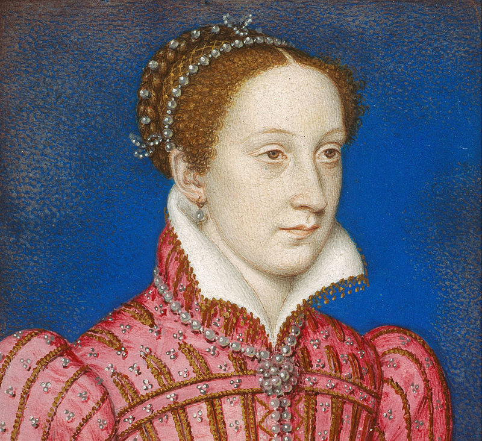

Preston, Idaho
Current Conditions
Partly CloudyLow 36°
High 45°
This Day in History
On February 8, 1587, Mary Queen of Scots was beheaded for treason. Her son, King James VI of Scotland, calmly accepted his mother’s execution, and upon Queen Elizabeth’s death in 1603 he became king of England, Scotland, and Ireland.
Address:
The Weather Center
123 Main Street.
Franklin, MI 87654
Phone:
(801) 555-1234
Email:
contact@yoururl.com